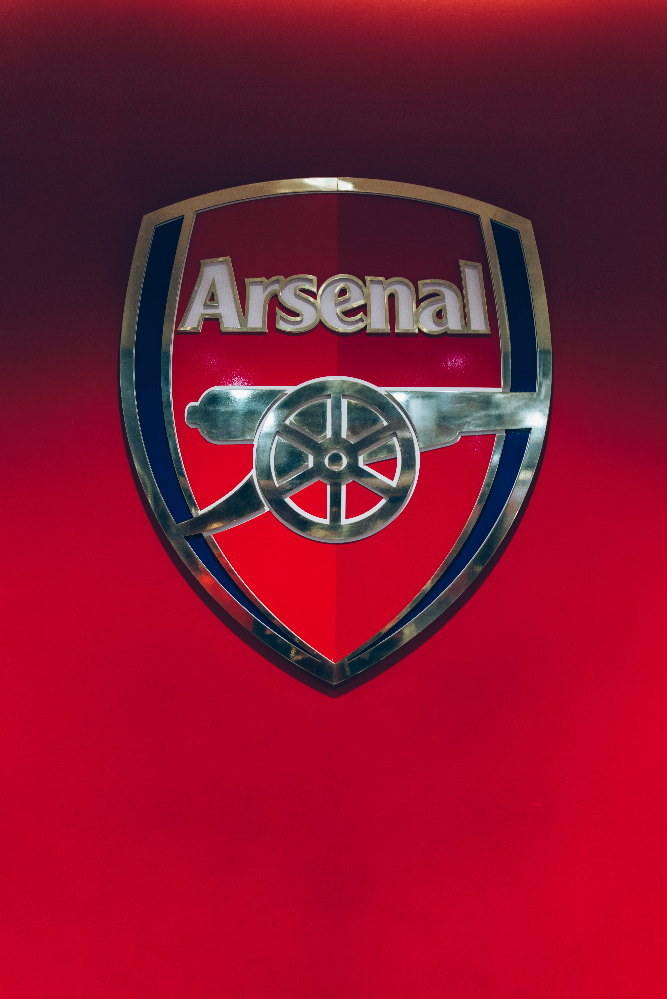

Arsenal is a major London-based Premier League club, nicknamed "The Gunners." They are known for their record 14 FA Cup titles and completing the 2003-04 season undefeated (The Invincibles). Their biggest rivalry is the North London Derby against Tottenham Hotspur.
Arsenal's home ground is the Emirates Stadium, which opened in 2006, succeeding their famous former stadium, Highbury. The club has historically been known for an attractive, attacking style of football, often prioritizing technical skill and fluid passing. Under legendary manager Arsène Wenger (1996-2018), the team achieved its greatest modern successes, fostering a culture of beautiful play. They are one of the most supported clubs globally, drawing fans from every continent. Recent efforts have focused on developing young talent and challenging for the Premier League title once again. Despite periods of transition, Arsenal maintains its status as one of England's "Big Six" clubs.